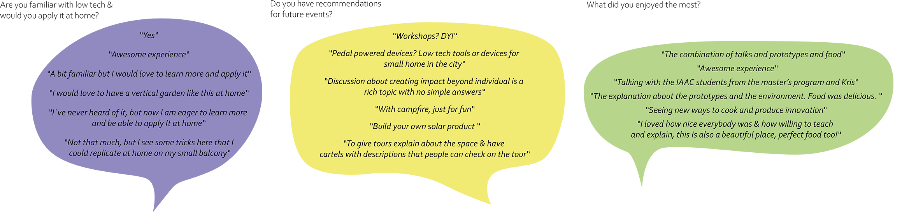
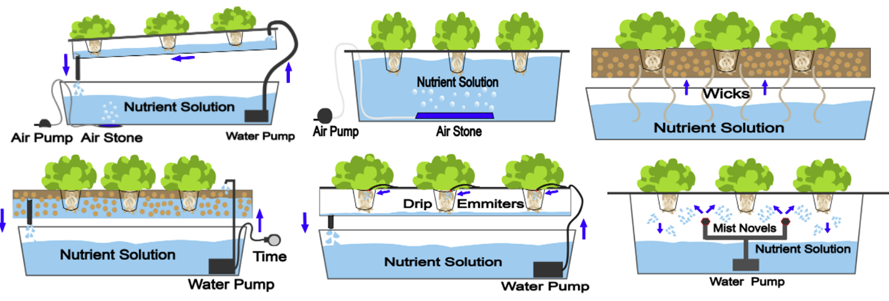
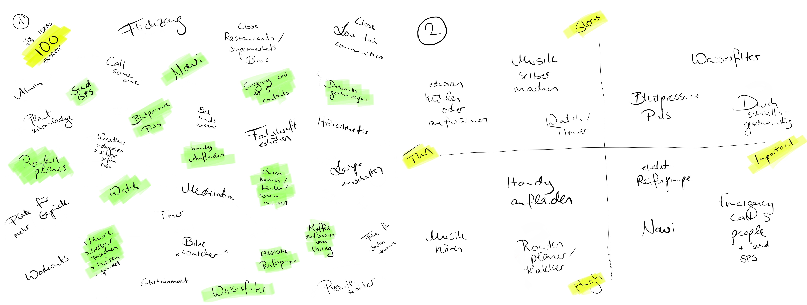

term 3
design studio
reflection first class


I would like to reflect on the class before the Mallorca field trip (8.3.2022). Mariana gives us some tips and let Audrey and me think about the slow lab, with whom we want to work with, what we want to reach, what is special and to bring solar punc to the city. I mean we still need to understand that we are living in the city, so how can we connect nature and city again? And bring people to make things slow, when they have a busy daily life. Also we need to make it more opensource and write every step down. On the 19.4.2022 we thought about our main learnings from Mallorca and for me it was: going forward and not being afraid of asking people, start doing/ contacting, at the beginning of the master everything was more a mess and in the second term I could connect the points more and also I learned the whole life is a process which you never finish. The first term I start finding my self-topic and interests, second term I was experimenting a lot and in the third term I what to focus and create specific solutions and share it with everyone.
3rd design space
masterplan

preservation
fermented onion For the fermented onions I got two big red onions, pepper corns, 2 table spoon salt and 400 ml of water. First, cut the onions into thin strips. Then, in a bowl, stir the salt into the water until it dissolves. Next, add the bay leaves and peppercorns to the bail jar and place the sliced onions on top. Last, pour everything with the salt water and screw the fermenting top on top. Leave the jar darkened at room temperature for about 2 weeks. After this time you can enjoy the onions very well for grilling. Onion
dried apple, banana & tomato I cut thin slides of apple’s, banana and tomato’s then I put it all slides separately on a shelf with a net. I let them dry for two days. Due to the recirculation, the heated air flows around the food. This allows moisture and liquids to evaporate and escape. This simple principle of preservation has been used in food production for decades. Apple Banana Tomato

pickled cuecumber For the pickled cucumbers I got 1kg of cucumbers, 400ml light vinegar, 600ml water, 200g sugar, 1.5 tablespoons salt, 2 teaspoons pepper, 0.5 onions and 4 bay leaves. First, cut the onions into thin strips. Thoroughly brush and wash the cucumbers and soak them overnight in salted water (rising bubbles are normal here). The next day, lightly mortar the juniper berries, allspice, pepper and mustard seeds so that the skins crack. Bring vinegar, sugar, salt and water to a boil, boiling the cucumbers in portions for two minutes each. Cut onions into rings and layer between the cucumbers in the thoroughly cleaned jars. Add 1 bay leaf, 1 teaspoon crushed spices and ¼ teaspoon dill to each jar. Divide the boiling broth among the jars, then immediately close the lids. Turn the jars upside down and leave to infuse in a dark place for two to three weeks. Cucumer
Also there are different other vegetables and fruits you could preserve, like cucumbers, cabbage, tomatoes, peppers, mushrooms, onions, garlic, brussels sprouts, cauliflower, broccoli, zucchini, eggplant, hot peppers, baby corn.
solar brunch


We made an event to get people in touch with different low tech devices and talk about ideas and thoughts how to bring old techniques to out daily life and combine them with new ones. Also to make them more attractive and promote a resilient lifestyle.
After almost all participants have arrived we have first of all made an introduction, introduced ourselves, who we are and what we are doing and everyone explained what they are doing and interested in.
During the event we were showing and explaining different kind of low tech devices: Solar panels for soldering, charging your phone and powering the music boxes, then a fireless cooker as a stool, an evaporative cooler as a clay pot with sand and water and three different models of solar ovens. Also we were connecting with people, exchanging ideas and thoughts and talked about possible collaborations. And of course we were eating out prepared cold food including salads, preservation techniques, bread and snacks and the warm food out of the solar ovens including different vegetables and chocolate as a desert.
In total we were 36 participants including eight our friends, kris and his colleague from “Low tech magazine” and us “Slow lab”, which include Paula Bustos, Audrey and me. We got also nice feedback with considerations and reflections from the people, who were participating:

hydroponicsystem types
Hydroponic system is a planting system without the usage of soil. Plants live from oxygen, water and light and thought the process of photosynthesis. The capture sunlight with chlorophyll. With the energy from the light they split water molecules, that they got through their root system. The hydrogen molecules combine with carbon dioxide to form carbohydrates, which the plants feed on. In the process, oxygen is released into the atmosphere. Hydroponic innovations have proven that direct contact with nutrient-filled water can be a more effective and versatile growing method than traditional irrigation. Hydroponic systems are not only a good alternative for sustainable monoculture, but use up to 90% less water than traditional agriculture. There are different types to create them: More information
Nutrient film technique (NFT) The nutrient solution is pumped into channels that hold the plants and are slightly sloped, so the liquid flows though the channel, over the roots and back to the reservoir. They use net pots to secure the plant. The NFT´s are good for plants with small root systems. The reservoir contains an air pump with an air stone and a water pump, which is connected to a timer.
Deep water culture (DWC) The roots hanging directly in the reservoir which contains all nutrients. Through an air pump and air stone air is going to be provided directly to the roots. They use net pots to secure the plant. The roots are constantly in the nutrients and be supplied with unlimited oxygen. Its similar to the Kratky method but with an air stone.
Wick Hydroponics This system requires no electricity, pumps or aerators. A nylon wick from the plants into the reservoir of nutrient solution the plants get all the nutrients and water. This system is good for growing herbs or plants which don’t require much water to grow.
Ebb & Flow/Flood & Drain system In this systems the plants are placed in large grow beds filled with grow medium. The grow bed I flooded with nutrient solution. A drain allows the water to only get to a certain point, so it doesn’t overflow. The water pump is powered by a timer, which fills up the growing bed with water and allows the water to run back to the reservoir. Through the drain system, oxygen and nutrients can flow frequently.
Drip Hydroponics Here the nutrients solution is pumped through tubes directly to the base of the plant. Drip emitters at the end of the tubes allow the liquid to drip at an adjustable flow saturating the grow medium. Its possible to grow many different kind of plants.
Aeroponics Through mist nozzles the roots of the plants are suspended with air and nutrient solution. With a water pump the solution is pumped into piping and the pressure builds the misters spray for the roots, where the rest of the solution falls back into the reservoir. Its easy to grow any kind of plants, but setting up the system is not easy.
Kratky method For the Kratky method you dont need any electricity, pumps, wicks or airstones. It’s a passive hydroponic system. The plants roots dangle in a reservoir filled with hydroponic nutrient solution. There is an air gab between the top o the water and the start of the roots so not the whole amount is under the water. You count for each plant around 3-5 litres. You set it up ones, reservoir, net pots with seeds and the nutrients solution and let it grow, because the roots grow deeper so they reach the water.
hydroponicsystem development

NFT and kratky method First I build a “Nutrient film technique” hydroponic system and then I tried the “Kratky method”. For the NFT system I built a low tech product out of things I had at home. In the end it was not easy to setup the waterflow, it was always running over border of the frame, why I couldn’t stop checking how its working and let it “work”. So I always needed to have a eye one it. Also I didn’t wanted to use/buy a timer to have it less expensive and low tech, so I always needed to turn on the water pump on my own and remember me to turn it on. Through the not good working frame and the water flow, I didn’t turn on the pump to often, so my plants dried out. So I build a second design following the Kratky method, which is a passive system without the usage of external electricity. PH-value list
bike devices brainstorming
What fahrrad generator mit navi und musicbox, stationary bike generator with a friction drive
Why vorteile fahrradfahren, warum attraktiver machen, difference solar panel
How energy outcome
Other ideas energy outcome
create an alternative future with a resilient lifestyle

slow traveling, growing, cooking, generating
bike generator
text
Term 3